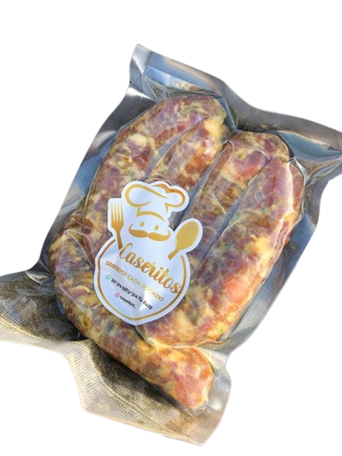
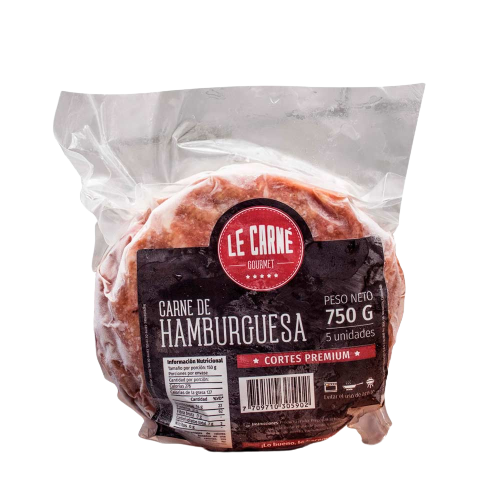
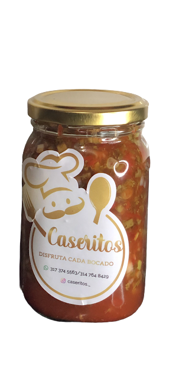

-
Chorizos

Son unos chorizos perfectos para compañar cada comida, fáciles y prácicos, los puedes preparar
de mil maneras como tu más los desees (asados, fritos, a la naranja, a la parrilla etc.) Son
caseros y artesanales, bajos en condimentos y deliciosos.
Haz click aquí para más detalles
Paquete de 5
Precio: $15.000
¿Cómo conservarlos? Guardalos en tu congelador, el día anterior a prepararlos los puedes meter a la nevera y 30 minutos antes de prepararlos sácalos de la nevera.
-
Tortas de carne

Estas tortas de carne o hamburguesa, son de carne pulpa de res, bajas en condimentos, claramente
como todos nuestros productos
son caseras y artesanales, perfecas para compañar las loncheras de los más peques y también
comidas de los más grandes.
Haz click aquí para más detalles
Paquete de 5
Precio: $18.000
¿Cómo conservarlos? Guardalos en tu nevera, si los vas a guardar por muchos días es preferible meterlos en el congelador
-
Encurtido

Este encurtido paisa o ají se usa para sazonar los alimentos, es un aderezo para acompañar tus
comidas, darles un toque especial y
diferente, se le puede agregar picante si así lo deseas.
Haz click aquí para más detalles
Cantidad: 370ml
Precio: $8.000
¿Cómo conservarlo? Siempre debes guardarlo en tu nevera, siempre utiliza una cuchara limpia y no debe tener contacto directo con los alimentos.
-
Chimichurri
.png)
Este chimichurri de precedencia argentina es perfecto para acompañar tus carnes, es un producto
muy famoso para acompañar tus asados, se realiza con hierbas frescas y su base es de perejil.
Haz click aquí para más detalles
Cantidad: 231ml
Precio: $12.000
¿Cómo conservarlo? Siempre debes guardarlo en tu nevera, siempre utiliza una cuchara limpia y no debe tener contacto directo con los alimentos.